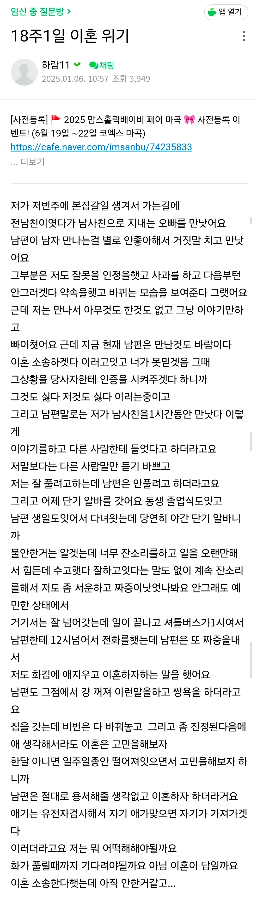
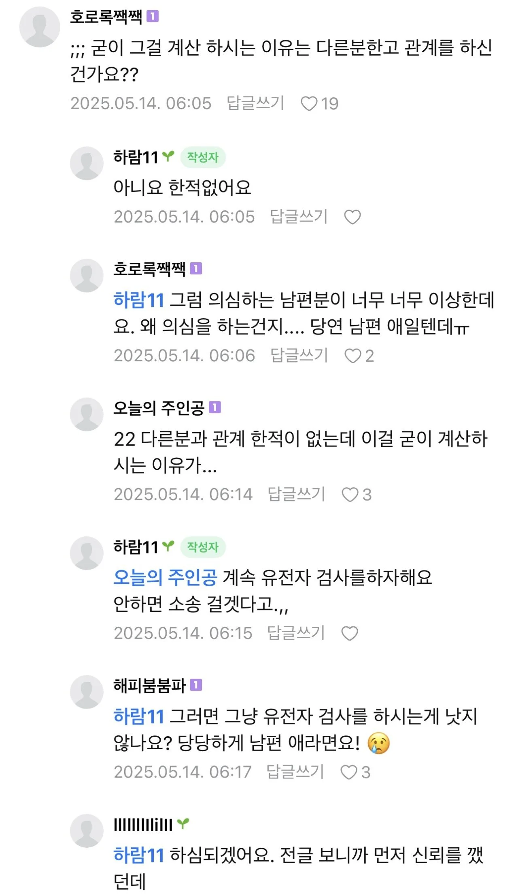
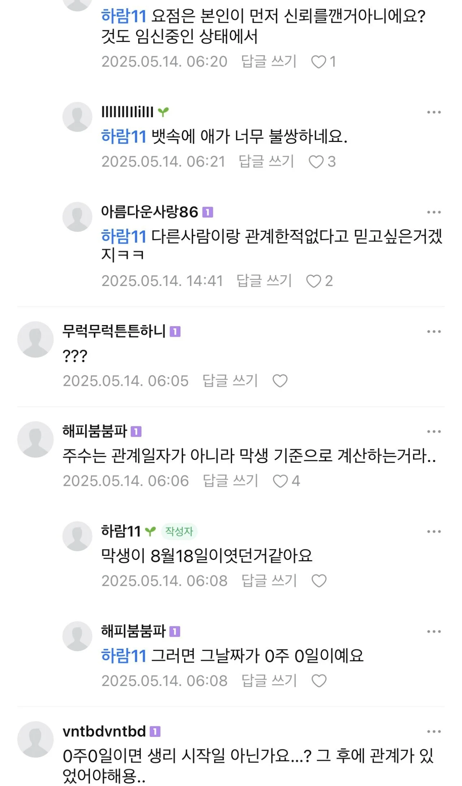

이건 전 글


요약하자면 전글에 전남친 몰래 만났다가
지인이 현남편한테 당신 아내가 전남친 몰래 만나고 다닌다 이야기해줌ㅋㅋ
그후 남편이 자기 애가 아닌거같다 빡쳐서 이혼하자하는데
여자는 유전사 검사 끝까지 안하고 버티는중 ㅋㅋㅋ

이건 전 글


요약하자면 전글에 전남친 몰래 만났다가
지인이 현남편한테 당신 아내가 전남친 몰래 만나고 다닌다 이야기해줌ㅋㅋ
그후 남편이 자기 애가 아닌거같다 빡쳐서 이혼하자하는데
여자는 유전사 검사 끝까지 안하고 버티는중 ㅋㅋㅋ
글쓰는 꼬라지부터가 ㅋㅋ 그냥 골빈여자임
제가를 저가로 쓰는건 방언인가 구어체인가
기초 맞춤법 모르는 등신임
네가를 너가로쓰는건 워낙걍 다들 그러려니 하는데
제가를 저가로쓰는건 진짜 없어뵈긴하더라
글이 너무 자극적이다; 주작같네
글에서 관상, 지능이 묻어나오는데 이게 주작이면 등단해야됨ㅅㅂㅋㅋ
자기변명 합리화를 안하는 문장이 없는 부분에서 리얼리티가 좆됨
주작
내용이 너무 주작같긴 한데
맞춤법, 단어선택, 문장력 하나하나가 너무나도 실감나잖아 ㅅㅂ ㅋㅋㅋㅋㅋ 지어낸거면 진짜 재능있는데
피임이라는거를 모르는 사람일까?
계산하는거보면 만난거지
그래서? 전남친이랑 했어, 안 했어?
간단히 대답하면 되는데, 그 간단한 Y/N을 대답 못 하니까 지랄이지.